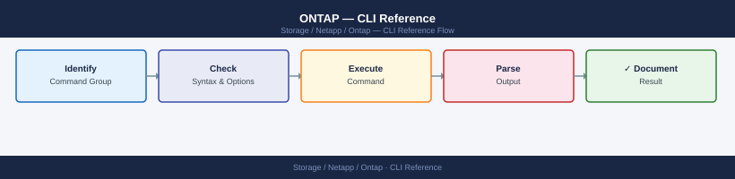

ONTAP — CLI Reference¶

Most data access configuration (NFS, CIFS, iSCSI, FC) happens at the SVM (Storage Virtual Machine) level — each SVM is an isolated data access instance within the cluster.
SSH to the cluster management IP and log in as
admin. Usecluster-name::>as your prompt. Commands that affect a specific SVM typically require-vserver <svm>.
Before you begin¶
- Access: Storage admin credentials (cluster admin or equivalent)
- Timing: safe to run during business hours unless a step is marked ⚠ (causes interruption)
- Dependencies: no active upgrades or migrations on the same infrastructure
- Logging: capture command output — paste into the change record on completion
Cluster & Nodes¶
Cluster-level identity, health status, HA pairs, NTP, and node-level diagnostics. Run these first when connecting to an unfamiliar cluster.
# Identity and status
cluster show
cluster identity show
cluster identity modify -name <new_name>
cluster ring show
cluster ha show
version
# NTP (time sync is critical — certificate errors and log correlation break without it)
cluster time-service ntp server show
cluster time-service ntp server create -server <ip>
cluster time-service ntp server delete -server <ip>
# Node status
node show
node show -fields node,health,uptime,model,serial-number
# Node-level diagnostics (drops to node shell)
node run -node <node> sysconfig
node run -node <node> sysconfig -a
node run -node <node> sysconfig -r
node run -node <node> df -h
node run -node <node> environment status
Cluster Identifier: 4a1b2c3d-5e6f-7g8h-9i0j-1k2l3m4n5o6p
Cluster Name: prod-cluster-01
Cluster Serial Number: 4-80-000001
Cluster Location:
Cluster Contact: storage-admin@company.com
Cluster UUID: a1b2c3d4-e5f6-7890-abcd-ef1234567890
Enabled Configured
NTP Server true true
NTP Server IP 192.168.1.50 -
NTP Server IP 10.20.30.40 -
Node Health Uptime Model Serial Number
node-01 true 45d 3h 22m A400 4141000001
node-02 true 45d 3h 18m A400 4141000002
System Configuration for node-01:
System Serial Number: 4141000001
System Model name: NetApp A400
Number of Processors: 2
Memory Size: 192 GB
Number of Disk Shelves: 3
Filesystem Size Used Avail Use% Mounted on
/dev/sda1 929G 456G 473G 49% /
/dev/sdb1 1.8T 1.2T 600G 67% /mnt/data
Environment Status for node-01:
Power Supply 1: OK
Power Supply 2: OK
Fan Module 1: OK
Fan Module 2: OK
Temperature Sensor 1: 28°C (OK)
Temperature Sensor 2: 31°C (OK)
Common errors
Error: command not found: cluster show — Ensure you are connected to the ONTAP cluster management interface (SSH to cluster IP, not node IP).
Error: NTP server 192.168.1.50 is already configured — Delete the existing NTP server entry first with cluster time-service ntp server delete -server 192.168.1.50 before creating a new one.
Error: node-01: command not found: sysconfig — Verify the node name is correct and the node is in a healthy state; use node show to confirm node availability.
System Health & Events¶
Overall health status, active alerts, the EMS event log, firmware updates, and AutoSupport. Start here when investigating issues or before maintenance windows.
# Overall health
system health status show # expected: ok
system health alert show # unresolved alerts
system health subsystem show
system health node-connectivity show
# EMS event log
event log show
event log show -severity emergency
event log show -severity alert
event log show -severity error
event log show -node <node_name>
event log show -time ">1h"
event log show -time ">24h"
event log show -messagename wafl.vol.full
# EMS notification destinations (email, syslog)
event notification show
event notification destination show
# Software images
system node image show
# Firmware updates (disk, shelf, SP)
system node firmware update -node <node>
system node upgrade-revert show
# AutoSupport
system node autosupport show
system node autosupport show -fields state,last-successful-destination
system node autosupport invoke -node <node> -type all -message "Manual test"
Status: ok
Node: node-01
Subsystem Status
───────────────────────── ──────
SAS-connect ok
Storage ok
NVMe-connect ok
CPU ok
Memory ok
Node: node-02
Subsystem Status
───────────────────────── ──────
SAS-connect ok
Storage ok
NVMe-connect ok
CPU ok
Memory ok
Time Severity Node Message
─────────────────────────────────────────────────────────────────
2024-01-15 14:32:18 ERROR node-01 wafl.vol.full: Volume vol_data is 95% full
2024-01-15 13:45:22 WARNING node-02 raid.disk.fail: Disk SN:ABC123XYZ failed
2024-01-15 12:10:05 ALERT node-01 scsiblade.fcp.linkdown: FC port 0a down
2024-01-14 09:22:41 ERROR node-02 nfs.mount.denied: NFS mount denied from 192.168.1.50
2024-01-14 08:15:33 NOTICE node-01 repl.snapshot.create: Snapshot created successfully
Notification Destination: mail-server.example.com
Filter-Name: important-events
Severity: error,alert,emergency
Node: node-01
Current Version: 9.13.1
Installed Version: 9.13.1
Last Update: 2024-01-10 08:30:15
Node: node-02
Current Version: 9.13.1
Installed Version: 9.13.1
Last Update: 2024-01-10 08:30:15
AutoSupport is enabled
State: on
Last Successful Destination: mail-server.example.com
Last Sent: 2024-01-15 10:45:22
AutoSupport invoked successfully on node-01. Message ID: 123e4567-e89b-12d3-a456-426614174000
Common errors
Error: command not found: system health status show — Ensure you are connected to the ONTAP cluster CLI (ssh admin@Error: Access denied. Insufficient privileges to run "system health alert show" — Verify your user role has admin or read-only admin privileges using security login show.
Error: Node "<node_name>" not found — Confirm the node name exists by running cluster show and use the exact node name from the "Node" column.
Storage — Aggregates & Disks¶
An aggregate is the physical RAID group that holds one or more volumes. Disks are the raw drives. Check aggregate capacity before provisioning new volumes.
# Aggregates
storage aggregate show
storage aggregate show -state online
storage aggregate show -fields aggr-name,node,size,availsize,usedsize,state
storage aggregate show-space
storage aggregate show-space -aggregate <aggr>
# Aggregate operations
storage aggregate rename -aggregate <old_name> -newname <new_name>
storage aggregate modify -aggregate <aggr> -maxraidsize 24
storage aggregate add-disks -aggregate <aggr> -diskcount <n>
# Disks
storage disk show
storage disk show -broken # failed or suspect
storage disk show -container-type spare # available spares
storage disk show -fields disk,bay,node,container-type,disk-type,rpm,size,position
# Disk operations
storage disk unfail -disk <disk_name> # re-add after investigation
storage disk assign -disk <disk_name> -owner <node_name>
# RAID groups
storage aggregate show-raidtree -aggregate <aggr>
storage aggregate show -fields raidtype
# Disk shelves
storage shelf show
storage shelf show -detail
Aggregate State Size Used Avail % Used
aggr0 online 10.92TB 4.23TB 6.69TB 38%
aggr1 online 21.87TB 8.91TB 12.96TB 40%
aggr2 online 10.92TB 2.14TB 8.78TB 19%
Name Node Size AvailSize UsedSize State
aggr0 node-01 10.92TB 6.69TB 4.23TB online
aggr1 node-02 21.87TB 12.96TB 8.91TB online
Disk Bay Node Container Type Type RPM Size Position
SAS2.1 1 node-01 aggregate SSD N/A 1.6TB shared
SAS2.2 2 node-01 spare SSD N/A 1.6TB shared
SAS3.5 5 node-02 aggregate HDD 7200 4.0TB shared
Shelf ID Shelf UID Shelf Model Status
shelf1 50:0a:09:80:12:34:56:78 DS224C normal
shelf2 50:0a:09:80:87:65:43:21 DS224C normal
Common errors
Error: "aggr0" does not exist — Verify the aggregate name with storage aggregate show and use the correct name.
Error: Disk "SAS2.1" is not a spare disk — Check disk status with storage disk show -fields disk,container-type before attempting operations.
Error: RAID group size cannot exceed maximum allowed for this aggregate — Reduce the requested RAID size or add more disks to the aggregate with storage aggregate add-disks.
Volumes¶
Volumes are the logical containers for data in ONTAP. Each volume lives in an aggregate and can be mounted at a junction path in the SVM namespace. FlexClone creates instant space-efficient copies for test/dev.
# List and status
volume show
volume show -vserver <svm>
volume show -fields volume,vserver,size,used,available,percent-used,state
volume show -state offline
volume show -junction-path <path>
# Create / modify / delete
volume create -vserver <svm> -volume <vol> -aggregate <aggr> -size <size> \
-junction-path <path> -policy <export-policy>
volume modify -vserver <svm> -volume <vol> -size <size>
volume modify -vserver <svm> -volume <vol> -percent-snapshot-space <n>
volume rename -vserver <svm> -volume <old> -newname <new>
volume delete -vserver <svm> -volume <vol>
# Mount / unmount
volume mount -vserver <svm> -volume <vol> -junction-path <path>
volume unmount -vserver <svm> -volume <vol>
# Bring online / offline
volume online -vserver <svm> -volume <vol>
volume offline -vserver <svm> -volume <vol>
# Storage efficiency (dedup / compression)
volume efficiency show
volume efficiency show -vserver <svm> -volume <vol>
volume efficiency start -vserver <svm> -volume <vol>
volume efficiency stop -vserver <svm> -volume <vol>
# FlexClone (instant space-efficient copy — great for dev/test)
volume clone create -vserver <svm> -flexclone <name> -parent-volume <vol>
volume clone create -vserver <svm> -flexclone <name> -parent-volume <vol> -parent-snapshot <snap>
volume clone split start -vserver <svm> -flexclone <name>
volume clone split status -vserver <svm> -flexclone <name>
Vserver Volume Aggregate State Type Size Used Available Percent-Used
--------- ------------ ---------- ---------- ----- ---------- ---------- --------- ------------
svm01 prod_data aggr1 online RW 500GB 287GB 213GB 57%
svm01 backup_vol aggr2 online RW 1TB 612GB 412GB 61%
svm02 dev_clone aggr1 online RW 250GB 89GB 161GB 36%
svm02 archive aggr3 offline RW 2TB 0B 2TB 0%
svm01 logs aggr1 online RW 100GB 78GB 22GB 78%
Volume Efficiency Status for Vserver svm01:
Volume State Status Savings Savings % Dedup Compression
------------ ---------- ------------ ---------- ---------- ------ -----------
prod_data enabled idle 156GB 35% on on
backup_vol enabled running 89GB 15% on off
Volume clone split status for flexclone dev_clone:
Vserver: svm02
Flexclone: dev_clone
Parent Volume: prod_data
Split Status: in progress
Percent Complete: 42%
Common errors
Error: command failed: volume does not exist — Verify the volume name and SVM name are correct with volume show -vserver <svm>.
Error: command failed: aggregate does not have enough space — Check aggregate free space with storage aggregate show and request a larger aggregate or reduce the requested volume size.
Error: command failed: volume is in use and cannot be deleted — Unmount the volume with volume unmount and ensure no clients are connected before attempting deletion.
Snapshots¶
ONTAP snapshots are read-only point-in-time copies stored within the same volume's snapshot reserve. They're near-instant and space-efficient — only changed blocks consume additional space.
# List snapshots
volume snapshot show
volume snapshot show -vserver <svm> -volume <vol>
volume snapshot show -vserver <svm> -volume <vol> -fields size,create-time,busy
# Create
volume snapshot create -vserver <svm> -volume <vol> -snapshot <snap_name>
# Delete
volume snapshot delete -vserver <svm> -volume <vol> -snapshot <snap_name>
volume snapshot delete -vserver <svm> -volume <vol> -snapshot * -force true # all snapshots
# Rename
volume snapshot rename -vserver <svm> -volume <vol> -snapshot <old_name> -new-name <new_name>
# Restore (volume must be offline or quiesced)
volume snapshot restore -vserver <svm> -volume <vol> -snapshot <snap_name>
volume snapshot restore -vserver <svm> -volume <vol> -snapshot <snap_name> -online true
# Snapshot policies
volume snapshot policy show
volume snapshot policy create -policy <policy_name> -enabled true
volume snapshot policy add-schedule -policy <policy_name> -schedule hourly -count 24
volume modify -vserver <svm> -volume <vol> -snapshot-policy <policy_name>
# Snapshot reserve
volume show -vserver <svm> -volume <vol> -fields snapshot-percent
volume modify -vserver <svm> -volume <vol> -percent-snapshot-space 15
# Accessing snapshots from the client
# NFS: ls /mnt/data/.snapshot/
# SMB: \\server\share\~snapshot\
Vserver Volume Snapshot Create Time Size
----------- ------------ ---------------------------------------- ---------------------- --------
svm-prod data_vol hourly.2024-01-15_0800 01/15 08:00:23 2.1GB
svm-prod data_vol hourly.2024-01-15_0900 01/15 09:00:18 1.8GB
svm-prod data_vol hourly.2024-01-15_1000 01/15 10:00:22 2.3GB
svm-prod data_vol daily.2024-01-14_2300 01/14 23:00:15 5.6GB
svm-prod data_vol manual_backup_20240115 01/15 11:30:45 3.2GB
Volume Snapshot Policy Enabled
----- ------------------- -------
svm-prod data_vol default true
Policy Name Schedule Count
-------------- ---------- -----
default hourly 24
default daily 7
default weekly 4
default monthly 12
Snapshot Reserve Percent
------------------------
15%
Volume snapshot create: Command completed successfully.
Volume snapshot delete: Command completed successfully.
Volume snapshot rename: Command completed successfully.
Volume snapshot restore: Command completed successfully.
Common errors
Error: command failed: Snapshot "snap_name" does not exist on volume "data_vol" — Verify the snapshot name exists with volume snapshot show -vserver <svm> -volume <vol> before attempting deletion or restore.
Error: command failed: Cannot restore snapshot while volume is online and in use — Either take the volume offline with volume offline -vserver <svm> -volume <vol> or use the -online true parameter to restore while online.
Error: command failed: Snapshot reserve space is insufficient — Increase the snapshot reserve percentage with volume modify -vserver <svm> -volume <vol> -percent-snapshot-space <higher_value>.
SVMs (Storage Virtual Machines)¶
SVMs (also called Vservers) are the data access layer. Each SVM has its own namespace, protocols, network interfaces, and security configuration — think of each SVM as an isolated virtual storage appliance within the cluster.
# List and view
vserver show
vserver show -fields vserver,type,state,allowed-protocols
vserver show -vserver <svm>
# Create
vserver create \
-vserver <svm_name> \
-rootvolume <vol_name> \
-aggregate <aggr_name> \
-rootvolume-security-style unix \
-language C.UTF-8
vserver modify -vserver <svm_name> -allowed-protocols nfs,cifs
# Delete
vserver stop -vserver <svm_name>
vserver delete -vserver <svm_name>
# Protocol management
vserver show-protocols -vserver <svm_name>
vserver modify -vserver <svm_name> -allowed-protocols nfs,cifs,iscsi
# Network interfaces (LIFs)
network interface show -vserver <svm_name>
network interface create -vserver <svm_name> -lif <lif_name> -role data \
-data-protocol nfs -home-node <node_name> -home-port <port> \
-address <ip> -netmask <mask>
network interface migrate -vserver <svm_name> -lif <lif_name> \
-dest-node <node_name> -dest-port <port>
# Join SVM to Active Directory (CIFS)
vserver cifs create -vserver <svm_name> -cifs-server <netbios_name> \
-domain corp.local -ou "OU=StorageServers,DC=corp,DC=local"
vserver cifs show -vserver <svm_name>
# NFS service
vserver nfs create -vserver <svm_name> -access true -v3 enabled -v4.1 enabled
vserver nfs show -vserver <svm_name>
# SVM state management
vserver stop -vserver <svm_name>
vserver start -vserver <svm_name>
Vserver Type State Allowed Protocols
------------- ---------- -------- -------------------
admin admin running nfs,cifs,iscsi
svm-prod-01 data running nfs,cifs
svm-prod-02 data running nfs
svm-test-01 data stopped nfs,cifs,iscsi
Vserver Type State Allowed Protocols
------------- ---------- -------- -------------------
svm-prod-01 data running nfs,cifs
(no output — command completes silently)
Vserver Type State Allowed Protocols
------------- ---------- -------- -------------------
svm-prod-01 data running nfs,cifs
Vserver: svm-prod-01
Allowed Protocols: nfs,cifs,iscsi
Vserver Lif IP Status Is Home
------------- ---------------------- --------------- ------------ --------
svm-prod-01 svm-prod-01_nfs_lif01 192.168.1.50 up true
svm-prod-01 svm-prod-01_cifs_lif01 192.168.1.51 up true
(no output — command completes silently)
Vserver CIFS Server Domain State
------------- -------------- ----------- -------
svm-prod-01 STORAGE01 corp.local running
Vserver NFS Status NFSv3 NFSv4.1
------------- ------------- -------- --------
svm-prod-01 enabled enabled enabled
(no output — command completes silently)
(no output — command completes silently)
Common errors
Error: command failed: Vserver "svm-prod-01" already exists. — Verify the SVM name is unique or use a different name before creation.
Error: command failed: Cannot delete Vserver "svm-prod-01": Vserver is in running state. — Stop the SVM with vserver stop -vserver <svm_name> before attempting deletion.
Error: command failed: Cannot create CIFS server: Domain "corp.local" is not reachable. — Verify DNS resolution and network connectivity to the Active Directory domain controller.
Network¶
LIFs (Logical Interfaces) are the IP addresses that clients connect to. Each LIF lives on a port and can be migrated between nodes for load balancing or maintenance.
# LIFs
network interface show
network interface show -vserver <svm>
network interface show -fields lif,vserver,address,home-node,home-port,status-oper
network interface create -vserver <svm> -lif <lif> -role data -data-protocol nfs \
-home-node <node> -home-port <port> -address <ip> -netmask <mask>
network interface modify -vserver <svm> -lif <lif> -address <ip> -netmask <mask>
network interface delete -vserver <svm> -lif <lif>
network interface migrate -vserver <svm> -lif <lif> -dest-node <node> -dest-port <port>
network interface revert -vserver <svm> -lif <lif>
network interface failover-groups show
# Ports
network port show
network port show -role data
network port show -fields node,port,speed,health-status,link-status
network port ifgrp show
network port vlan show
# Routes
network route show
network route create -vserver <svm> -destination 0.0.0.0/0 -gateway <gw>
network route delete -vserver <svm> -destination 0.0.0.0/0 -gateway <gw>
# Connectivity test
network ping -lif <lif> -vserver <svm> -destination <ip>
Vserver Interface Address Home Node Home Port Status
----------- --------------- --------------- --------------- --------------- ----------
svm-prod nfs_lif_01 192.168.1.100 cluster-01 e0d up
svm-prod nfs_lif_02 192.168.1.101 cluster-02 e0d up
svm-mgmt mgmt_lif 192.168.1.50 cluster-01 e0c up
Node Port Speed Health Status Link Status
----------- ------- ------- --------------- ---------------
cluster-01 e0a 10Gb healthy up
cluster-01 e0b 10Gb healthy up
cluster-02 e0a 10Gb healthy down
cluster-02 e0b 10Gb healthy up
Vserver Destination Gateway Metric
----------- --------------- --------------- -------
svm-prod 0.0.0.0/0 192.168.1.1 20
PING nfs_lif_01 (192.168.1.100) from 192.168.1.100: 56 data bytes
64 bytes from 192.168.1.100: icmp_seq=0 ttl=64 time=0.123 ms
64 bytes from 192.168.1.100: icmp_seq=1 ttl=64 time=0.098 ms
64 bytes from 192.168.1.100: icmp_seq=2 ttl=64 time=0.105 ms
Common errors
Error: "cluster-01" is not a valid home node for this cluster — Verify the node name matches output from cluster show and that the node is healthy.
Error: Port "e0d" does not exist on node "cluster-02" — Confirm the port exists using network port show -node <node> before assigning it to a LIF.
Error: Address 192.168.1.100 is already in use by interface nfs_lif_01 — Assign a unique IP address or delete the existing LIF first with network interface delete.
NFS¶
Configure the NFS service, export policies, and access rules. Export policies control which clients can mount which volumes — every volume references an export policy by name.
# NFS service
vserver nfs show
vserver nfs show -vserver <svm>
vserver nfs create -vserver <svm> -v3 enabled -v4.0 enabled -v4.1 enabled
vserver nfs modify -vserver <svm> -v4.1 enabled
# Export policies
vserver export-policy show
vserver export-policy show -vserver <svm>
vserver export-policy create -vserver <svm> -policyname <name>
vserver export-policy delete -vserver <svm> -policyname <name>
# Export rules (each rule defines who can access and how)
vserver export-policy rule show
vserver export-policy rule show -vserver <svm> -policyname <name>
vserver export-policy rule create \
-vserver <svm> \
-policyname <name> \
-ruleindex 1 \
-clientmatch <cidr_or_ip> \
-rorule sys \
-rwrule sys \
-superuser sys
vserver export-policy rule delete -vserver <svm> -policyname <name> -ruleindex <n>
# Assign policy to volume
volume modify -vserver <svm> -volume <vol> -policy <export-policy>
# Verify client access
vserver nfs check-client -vserver <svm> -client-ip <ip>
# Connected NFS clients
nfs connected-client show -vserver <svm>
Vserver: svm-prod-01
Enabled Protocols: nfs
NFSv3: enabled
NFSv4.0: enabled
NFSv4.1: enabled
NFSv4.2: disabled
Is Showmount Enabled?: true
Maximum Number of Records Displayed: 1000000
Vserver: svm-prod-01
Policy Name: default
Policy Name: clients-rw
Policy Name: clients-ro
Vserver: svm-prod-01
Policy Name: clients-rw
Rule Index: 1
Client Match: 10.20.0.0/16
RO Rule: sys
RW Rule: sys
Superuser: sys
Anonymous UID: 65534
Allow SUID?: true
Volume modify successful: volume vol-data01 export policy set to clients-rw
Vserver: svm-prod-01
Client IP: 10.20.15.42
Access Level: read-write
Auth Flavor: sys
Mounted Path: /vol/vol-data01
Vserver: svm-prod-01
Client IP: 10.20.15.42
Client Hostname: app-server-03.prod.local
Access Level: read-write
NFS Version: nfsv4.1
...
Common errors
Error: command failed: Vserver "svm-prod-01" does not exist. — Verify the SVM name with vserver show and use the correct name in the -vserver parameter.
Error: command failed: Export policy "clients-rw" does not exist on Vserver "svm-prod-01". — Create the export policy first using vserver export-policy create before assigning it to a volume.
Error: command failed: Client IP 10.20.15.42 does not have access to volume vol-data01. — Verify the export policy rule includes the client IP/CIDR and is assigned to the volume with volume show -fields policy.
CIFS / SMB¶
Create and manage CIFS (SMB) file shares. The CIFS server is joined to Active Directory. Shares expose volume paths to Windows clients.
# CIFS server
vserver cifs show
vserver cifs show -vserver <svm>
vserver cifs create -vserver <svm> -cifs-server <name> -domain <domain>
vserver cifs delete -vserver <svm>
# Shares
vserver cifs share show
vserver cifs share show -vserver <svm>
vserver cifs share create -vserver <svm> -share-name <name> -path <path>
vserver cifs share modify -vserver <svm> -share-name <name> -comment <text>
vserver cifs share delete -vserver <svm> -share-name <name>
vserver cifs share access-control show -vserver <svm> -share <name>
vserver cifs share access-control modify \
-vserver <svm> -share <name> \
-user-or-group <group> -permission Full_Control
# Sessions and open files
vserver cifs session show
vserver cifs session show -vserver <svm>
vserver cifs session show -fields node,vserver,connection-count
vserver cifs session file show -vserver <svm>
vserver cifs session close -node <node> -vserver <svm> -session-id <id>
# SMB version settings (disable SMB1 for security)
vserver cifs options show -vserver <svm>
vserver cifs options modify -vserver <svm> -smb1-enabled false
vserver cifs options modify -vserver <svm> -smb2-enabled true
# AD connectivity check
vserver cifs show -vserver <svm> -fields ad-status
Vserver CIFS Server Domain
------------- -------------- ----------------
svm-prod-01 fileserver01 corp.example.com
svm-prod-02 fileserver02 corp.example.com
Vserver Share Name Path
------------- -------------- -------------------------
svm-prod-01 data /vol/vol_data
svm-prod-01 users /vol/vol_users
svm-prod-02 archive /vol/vol_archive
Vserver User or Group Permission
------------- -------------------------- ----------------
svm-prod-01 corp.example.com\Domain Users Full_Control
Node Vserver Connection Count
------------- ------------- ----------------
node-01 svm-prod-01 12
node-02 svm-prod-01 8
Vserver AD Status
------------- ---------
svm-prod-01 up
svm-prod-02 up
Common errors
Error: command failed: CIFS server "fileserver01" already exists on Vserver "svm-prod-01" — Verify the CIFS server does not already exist with vserver cifs show -vserver <svm> before creation.
Error: command failed: Cannot delete CIFS server while shares exist — Delete all CIFS shares first using vserver cifs share delete -vserver <svm> -share-name <name> before deleting the CIFS server.
Error: command failed: Active Directory connection failed for domain "corp.example.com" — Verify DNS resolution and AD credentials are correct, and check network connectivity to domain controllers with network ping -vserver <svm> -destination <dc-ip>.
Block Protocols (iSCSI / FC)¶
Present LUNs to hosts via iSCSI or Fibre Channel. LUNs are mapped to igroups (initiator groups) — an igroup lists the WWNs or IQNs of hosts that are allowed to see the LUN.
# iSCSI service
vserver iscsi show
vserver iscsi create -vserver <svm>
vserver iscsi modify -vserver <svm> -is-admin-enabled true
# LUNs
lun show
lun show -vserver <svm>
lun show -fields path,vserver,size,state,mapped,os-type
lun create -vserver <svm> -path <path> -size <size> -ostype vmware
lun delete -vserver <svm> -path <path>
lun resize -vserver <svm> -path <path> -size <size>
lun online -vserver <svm> -path <path>
lun offline -vserver <svm> -path <path>
lun map -vserver <svm> -path <path> -igroup <igroup>
lun unmap -vserver <svm> -path <path> -igroup <igroup>
lun mapping show
lun mapping show -vserver <svm>
# igroups (define which hosts can see which LUNs)
lun igroup show
lun igroup show -vserver <svm>
lun igroup create -vserver <svm> -igroup <name> -protocol iscsi -ostype vmware
lun igroup add -vserver <svm> -igroup <name> -initiator <iqn>
lun igroup remove -vserver <svm> -igroup <name> -initiator <iqn>
lun igroup delete -vserver <svm> -igroup <name>
# Fibre Channel
vserver fcp show
vserver fcp create -vserver <svm>
fcp adapter show
fcp adapter show -fields node,adapter,state,speed,fabric-established
fcp interface show
fcp initiator show
lun igroup create -vserver <svm> -igroup <name> -protocol fcp -ostype vmware
Vserver Name Admin Operational
----------------------- ---------- -----------
svm_prod true true
svm_dr true true
Vserver Path Size State Mapped OS Type
--------- -------------------------------------- ---------- -------- ------ --------
svm_prod /vol/datastore01/lun_vm_prod_001 100GB online true vmware
svm_prod /vol/datastore01/lun_vm_prod_002 50GB online true vmware
svm_prod /vol/backup/lun_backup_001 500GB online false vmware
svm_dr /vol/dr_vol/lun_dr_001 200GB online true vmware
...
Vserver Igroup Name Protocol OS Type Initiators
--------- ----------------- -------- ------- ----------
svm_prod igroup_esxi_01 iscsi vmware 3
svm_prod igroup_esxi_02 iscsi vmware 2
svm_dr igroup_dr_hosts iscsi vmware 4
Vserver Igroup Name LUN Path LUN ID
--------- ----------------- ---------------------------------- ------
svm_prod igroup_esxi_01 /vol/datastore01/lun_vm_prod_001 0
svm_prod igroup_esxi_01 /vol/datastore01/lun_vm_prod_002 1
svm_prod igroup_esxi_02 /vol/backup/lun_backup_001 0
Node Adapter State Speed Fabric-Established
--------- ------- ------ ----- ------------------
node-01 0a online 16Gb true
node-01 0b online 16Gb true
node-02 0a online 16Gb true
node-02 0b online 16Gb false
Common errors
Error: command failed: LUN /vol/datastore01/lun_vm_prod_001 is already mapped to igroup igroup_esxi_01 — Verify the LUN is not already mapped to the target igroup before attempting to map it again.
Error: command failed: igroup igroup_esxi_01 does not exist — Create the igroup first using lun igroup create before adding initiators or mapping LUNs to it.
Error: command failed: LUN /vol/datastore01/lun_vm_prod_001 cannot be deleted while it is mapped — Unmap the LUN from all igroups using lun unmap before attempting deletion.
SnapMirror¶
SnapMirror replicates volumes between SVMs or clusters for disaster recovery. The destination volume is read-only until a failover (break). Monitor lag time to ensure RPO is being met.
# View relationships
snapmirror show
snapmirror show -destination-path <svm>:<vol>
snapmirror show -fields source-path,destination-path,state,lag-time,health
snapmirror show -health false # unhealthy only
# Create
snapmirror create \
-source-path <src_svm>:<src_vol> \
-destination-path <dest_svm>:<dest_vol> \
-type DP \
-policy MirrorAllSnapshots
snapmirror delete -destination-path <svm>:<vol>
snapmirror release -source-path <svm>:<vol> -destination-path <svm>:<vol>
# Operations
snapmirror initialize -destination-path <svm>:<vol> # baseline transfer
snapmirror update -destination-path <svm>:<vol> # manual sync
snapmirror quiesce -destination-path <svm>:<vol> # pause
snapmirror break -destination-path <svm>:<vol> # make destination writable (failover)
snapmirror resync -destination-path <svm>:<vol> # re-establish after break
snapmirror abort -destination-path <svm>:<vol>
# Monitoring
snapmirror history show -destination-path <svm>:<vol>
snapmirror lag show
snapmirror show -transfer-progress
Source Destination State Lag-time
prod-svm:vol_data dr-svm:vol_data SnapMirror Idle 00:15:32
prod-svm:vol_logs dr-svm:vol_logs SnapMirror Idle 00:08:47
prod-svm:vol_backup dr-svm:vol_backup Transferring 00:02:15
Source Path Destination Path State Lag-time Health
prod-svm:vol_data dr-svm:vol_data Snapmirrored 00:15:32 true
prod-svm:vol_logs dr-svm:vol_logs Snapmirrored 00:08:47 true
Source Destination State Health
prod-svm:vol_archive dr-svm:vol_archive Snapmirrored false
Transfer Status
Source Destination Progress Elapsed
prod-svm:vol_data dr-svm:vol_data 45% 00:23:18
Operation ID Job ID State Start Time
snapmirror_initialize_1702145632 12345 completed 11/09/2024 14:27:12
snapmirror_update_1702145891 12346 completed 11/09/2024 14:31:31
Common errors
Error: command failed: Relationship does not exist — Verify the destination path exists and the SnapMirror relationship has been created with snapmirror create.
Error: command failed: Destination volume is not a DP volume — Ensure the destination volume was created with type DP (Data Protection) before creating the SnapMirror relationship.
Error: command failed: Transfer is in progress — Wait for the current transfer to complete or use snapmirror abort -destination-path <svm>:<vol> before attempting another operation.
Quotas¶
Quotas limit disk space and file counts on volumes, qtrees, or users. Enable quotas on a volume, create rules, then resize to activate them without disrupting access.
# View quota status and usage
volume quota show
volume quota report -vserver <svm> -volume <vol>
volume quota policy rule show -vserver <svm>
# Enable / disable / resize
volume quota on -vserver <svm> -volume <vol>
volume quota off -vserver <svm> -volume <vol>
volume quota resize -vserver <svm> -volume <vol> # pick up new rules without disabling
# Create quota rules
# Tree quota — limit a qtree
volume quota policy rule create \
-vserver <svm> -policy-name default -volume <vol> \
-type tree -target /qtree_name \
-disk-limit 500g -soft-disk-limit 400g
# Default user quota (applies to all users)
volume quota policy rule create \
-vserver <svm> -policy-name default -volume <vol> \
-type user -target "" -disk-limit 100g
# Specific user quota
volume quota policy rule create \
-vserver <svm> -policy-name default -volume <vol> \
-type user -target "DOMAIN\username" -disk-limit 200g
# Modify / delete rules
volume quota policy rule modify \
-vserver <svm> -policy-name default -volume <vol> \
-type tree -target /qtree_name -disk-limit 1t
volume quota policy rule delete \
-vserver <svm> -policy-name default -volume <vol> \
-type tree -target /qtree_name
Vserver Volume Tree Type Target Disk Limit Soft Limit Used %Used
---------- -------- ---------- ------- ----------------- ------------ ------------ ---------- ------
svm-prod vol_data /qtree_01 tree /qtree_01 500GB 400GB 425GB 85%
svm-prod vol_data - user "" 100GB 80GB 92GB 92%
svm-prod vol_data - user DOMAIN\jsmith 200GB 160GB 145GB 72%
svm-prod vol_data - user DOMAIN\achen 100GB 80GB 78GB 78%
Policy: default
Vserver: svm-prod
Volume: vol_data
Type Target Disk Limit Soft Disk Limit Files Limit Soft Files Limit
------- ----------------- ------------ ----------------- ------------- ------------------
tree /qtree_01 500GB 400GB - -
user "" 100GB 80GB - -
user DOMAIN\jsmith 200GB 160GB - -
user DOMAIN\achen 100GB 80GB - -
(no output — command completes silently)
Common errors
Error: command failed: Quotas are not enabled on volume "vol_data" — Run volume quota on -vserver <svm> -volume <vol> before creating rules.
Error: command failed: Quota policy rule already exists — Delete the existing rule with volume quota policy rule delete before recreating it with different parameters.
Error: command failed: Cannot disable quotas while resize is in progress — Wait for the resize operation to complete by checking volume quota resize status before attempting to disable quotas.
Performance & QoS¶
ONTAP statistics require a sample start/stop cycle before viewing. QoS (Quality of Service) lets you cap or guarantee throughput for specific volumes or LUNs.
# Statistics collection
statistics start -object volume -sample-id perf_check
# wait 10–30 seconds
statistics stop -sample-id perf_check
statistics show -sample-id perf_check
# Filter statistics output
statistics show -sample-id perf_check | grep -E "total_latency|read_latency|write_latency"
statistics show -sample-id perf_check | grep -E "total_ops|read_ops|write_ops"
# QoS policy groups
qos policy-group show
qos policy-group create -policy-group prod-limit -vserver <svm> -max-throughput 5000IOPS
qos policy-group create -policy-group db-floor -vserver <svm> -min-throughput 2000IOPS
qos policy-group modify -policy-group prod-limit -max-throughput 8000IOPS
qos policy-group delete -policy-group prod-limit
# Apply QoS to a volume
volume modify -vserver <svm> -volume <vol> -qos-policy-group prod-limit
volume modify -vserver <svm> -volume <vol> -qos-policy-group none
# QoS workload monitoring
qos workload show
qos statistics performance show
cluster1::> statistics start -object volume -sample-id perf_check
cluster1::> statistics stop -sample-id perf_check
cluster1::> statistics show -sample-id perf_check
Object: volume
Instance: vol_data
Counter Value
------------------------------------------------------------ --------------------------------
total_latency 4521us
read_latency 3102us
write_latency 5847us
total_ops 18432
read_ops 12104
write_ops 6328
cluster1::> qos policy-group show
Vserver: svm-prod
Policy Group Name: prod-limit
Max Throughput: 5000 IOPS
Min Throughput: —
Absolute Min IOPS: —
Vserver: svm-prod
Policy Group Name: db-floor
Max Throughput: —
Min Throughput: 2000 IOPS
Absolute Min IOPS: —
cluster1::> qos policy-group create -policy-group prod-limit -vserver svm-prod -max-throughput 5000IOPS
(no output — command completes silently)
cluster1::> qos policy-group modify -policy-group prod-limit -max-throughput 8000IOPS
(no output — command completes silently)
cluster1::> volume modify -vserver svm-prod -volume vol_data -qos-policy-group prod-limit
(no output — command completes silently)
cluster1::> qos workload show
Workload Name: vol_data
Policy Group: prod-limit
Throughput: 4821 IOPS
Latency: 4.2ms
Common errors
Error: command failed: policy group "prod-limit" already exists — Delete the existing policy group first with qos policy-group delete -policy-group prod-limit or use a different name.
Error: QoS policy group "prod-limit" is in use and cannot be deleted — Remove the policy group from all volumes using volume modify -vserver <svm> -volume <vol> -qos-policy-group none before deletion.
Error: Invalid value specified for "-max-throughput": value must be between 100 and 999999 — Ensure throughput values are numeric and within the valid range (e.g., use 5000IOPS not 5000 IOPS).
Security & Users¶
User login accounts, role-based access control, certificate management, and CIFS/NFS audit logging.
# Login accounts
security login show
security login show -vserver <svm>
security login create \
-username <user> \
-application ssh \
-authentication-method password \
-role admin \
-vserver <svm>
security login delete -username <user> -application ssh -vserver <svm>
security login password -username <user> -vserver <svm>
security login lock -username <user> -vserver <svm>
security login unlock -username <user> -vserver <svm>
# Roles
security login role show
security login role show -vserver <svm>
security login role create -role <role_name> -vserver <svm> \
-cmddirname DEFAULT -access none
security login role create -role <role_name> -vserver <svm> \
-cmddirname "volume show" -access readonly
# Certificates
security certificate show
security certificate show -vserver <svm>
security certificate install -vserver <svm> -type server
security certificate generate-csr \
-common-name <cn> -size 2048 -country US \
-state <state> -locality <city> -organization <org>
# Audit logging (file access events)
vserver audit show -vserver <svm>
vserver audit create -vserver <svm> -destination /audit_logs -format xml
vserver audit enable -vserver <svm>
cluster1::> security login show
Vserver: cluster1
Is-SysAdmin? Authentication
User/Group Application Method Enabled SASL Enabled
-------------------------- ----------- ---------- ------------ ----------------
admin console password true -
admin ontapi password true -
admin ssh password true -
rsnapshot ontapi password true -
cluster1::> security login role show
Role Vserver
--------------------------------------- ---------------
admin cluster1
readonly cluster1
vsadmin cluster1
backup cluster1
cluster1::> security certificate show
Vserver Serial Number Common Name Expiration Date
---------- --------------- ---------------------------------- -----------------
cluster1 01A2B3C4D5E6F7 cluster1.example.com Dec 15 2025
svm-prod 02F7E6D5C4B3A1 svm-prod.example.com Mar 22 2026
cluster1::> vserver audit show -vserver svm-prod
Vserver: svm-prod
Audit Log Format: xml
Enabled: true
Log Destination Path: /audit_logs
Rotation Schedule (in days): 0
Common errors
Error: entry already exists — Verify the user does not already exist with security login show -vserver <svm> before creation.
Error: Cannot generate certificate: Certificate already exists for this vserver — Delete the existing certificate with security certificate delete -vserver <svm> before generating a new one.
Error: Vserver "<svm>" does not exist — Confirm the SVM name is correct and exists by running vserver show.
AutoSupport¶
AutoSupport sends telemetry and event data to NetApp support. It enables proactive case creation and feeds into NetApp Active IQ (cloud analytics). Keep it enabled and ensure delivery is working.
# Status
autosupport show
autosupport show -node <node>
autosupport show -fields last-subject-sent,last-successful-destination
# Send messages
autosupport invoke -node <node> -type test
autosupport invoke -node <node> -type all -message "Manual upload for case SR-XXXXX"
# History
autosupport history show
autosupport history show -node <node>
autosupport history show -fields seq-num,status,triggered-time,destination
# Configuration
autosupport modify -node <node> -state enable
autosupport modify -node <node> -state disable
autosupport modify -node <node> -mail-hosts <smtp_server>
autosupport modify -node <node> -proxy-url http://proxy.example.local:8080
autosupport modify -node <node> -noteto ops@corp.local
autosupport modify -node <node> -transport https
# Verify HTTPS connectivity
autosupport check show
Node: cluster1-01
State: enable
Node Enabled: true
Message Logging Level: info
Proxy URL: http://proxy.example.local:8080
Mail Hosts: smtp.corp.local
Noteto: ops@corp.local
Transport: https
Last Subject Sent: AutoSupport Notification sent by cluster1-01
Last Successful Destination: https
Node: cluster1-02
State: enable
Node Enabled: true
Message Logging Level: info
Proxy URL: http://proxy.example.local:8080
Mail Hosts: smtp.corp.local
Noteto: ops@corp.local
Transport: https
Last Subject Sent: AutoSupport Notification sent by cluster1-02
Last Successful Destination: https
Seq-num Status Triggered-time Destination
1847 success 10/15/2024 14:32:18 https
1846 success 10/15/2024 08:15:42 https
1845 success 10/14/2024 22:01:05 https
1844 success 10/14/2024 15:47:33 https
1843 success 10/14/2024 09:22:19 https
AutoSupport HTTPS Connectivity Check Results:
cluster1-01: PASS
cluster1-02: PASS
Common errors
Error: "cluster1-03" is not a valid node name — Verify the node name matches output from cluster show and use the correct node identifier.
Error: SMTP server "invalid.mail.local" is not reachable — Confirm the mail host is resolvable and accessible on port 25 from the cluster management network.
Error: AutoSupport invoke failed: transport https not configured — Enable HTTPS transport first using autosupport modify -node <node> -transport https before invoking HTTPS-based AutoSupport messages.
Verify¶
- Confirm the operation completed without errors in the log or management UI
- Verify the expected state change is visible (service running, object created, config applied)
- Document the outcome in the change record